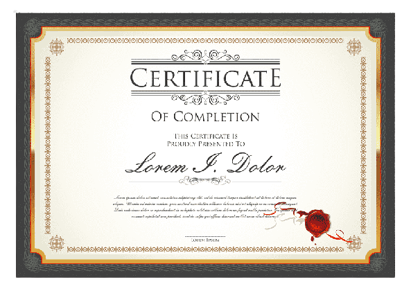

ACTIVITIES
การพัฒนาโปรแกรมเพื่อรองรับการเก็บข้อมูลสภาพแวดล้อมทางอากาศ
ภายใต้โครงการพัฒนานวัตกรรมด้านเทคโนโลยีอวกาศดาวเทียมวงโคจรต่ำ (Low Earth Orbit)
เมื่อวันที่ 22 กรกฏาคม พ.ศ.2563 ณ สถาบันวิชาการ ทีโอที จังหวัดนนทบุรี
.png)
ได้เรียนรู้เกี่ยวกับบอร์ดและภาษา Rasberry Pi เป็นครั้งแรก เป็นประสบการณ์ที่แปลกใหม่มากๆ
โครงการกิจกรรมค่ายออนไลน์ “Smart Plant Factory” แผนการเรียนเตรียม วิทยาศาสตร์-คอมพิวเตอร์
เป็นโครงการในความร่วมมือระหว่างงานคอมพิวเตอร์กลุ่มสาระวิทยาศาสตร์ โรงเรียนโพธิสารพิทยากรและ สวทช.
ระหว่างวันที่ 28-30 กันยายน พ.ศ.2564 ผ่านระบบ Zoom Meeting วิทยากรจาก สวทช.
เป็นการนำเอาระบบ IOT หรือ Internet Of Thing มาประยุกต์ใช้ในการเกษตรจริงๆ
ได้เรียนรู้เกี่ยวกับ Thonny, การสังเคราะห์แสงของพืช, Line Bot และเซนเซอร์ต่างๆมากมาย
กิจกรรมปฐมนิเทศ-ค่ายกลุ่มสัมพันธ์ นักเรียนระดับชั้น ม.4 ปีการศึกษา 2565
ระหว่างวันที่ 11 พฤษภาคม พ.ศ.2565 ณ โรงเรียนโพธิสารพิทยากร
.png)
ทำหน้าที่เป็นวิทยากรสอนใช้งาน CodeCombat/แนะแนวการเขียนภาษาไพทอนเบื้องต้น
ได้ฝึกความเป็นผู้นำ การทำงานเป็นทีม รวมถึงการแก้ไขปัญหาเฉพาะหน้า
